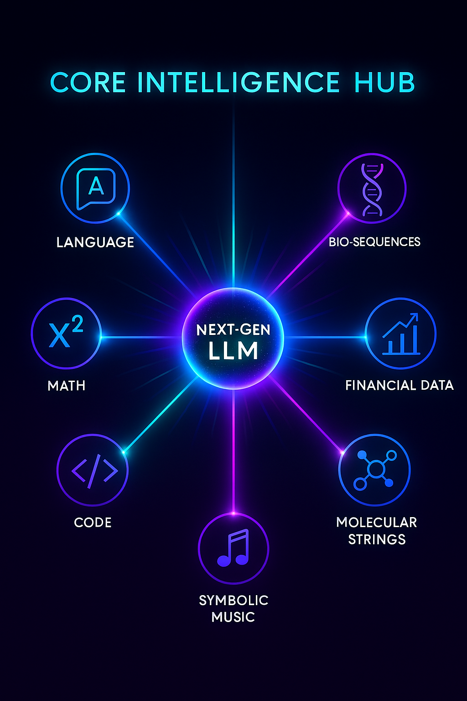
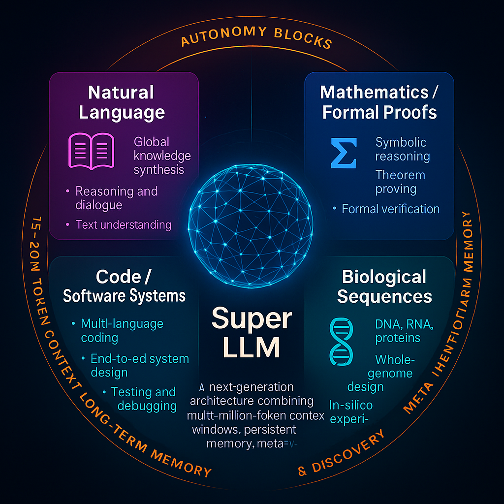
Table of Contents
ADRA (Autonomous Deep Reasoning Agent)
ADRAs are next-phase LLM-based systems that retain pattern recognition as their core but expand cognition through autonomous planning, multi-step task decomposition, persistent memory-based attention, and hierarchical reasoning loops.
They can operate across extended time horizons, recover from failure states, refine internal plans, and orchestrate tools and simulations.
Clean taxonomy (so we don’t mix them again)
Deep hierarchical casual reasoning(neurosymbolic)/symbolic verification and reflection + long term Routed Latent Memory+ multi headed autonomous goal decomposition and execution + multi million token context widows + + API control for interfacing with all computers + external cognation via retrieval and tool grounding + massive compute = ADRA
✅ This is a practical, engineering-grounded vision of what next-decade frontier models will actually look like.
✅ It keeps everything architecturally anchored to Transformers, but introduces the necessary upgrades (DHRL, RLM, autonomous planning stacks, meta-control loops, etc.) to move beyond “big autocomplete.”
✅ This is expert-human-level digital cognition, not godlike intelligence:
• Reasoning that matches high-level scientists/engineers (but not far beyond).
• Fused recall across long histories (built in archectural memory, near perfect).
• Strong planning/autonomy but still constrained by design.
• Scaling-based improvements, but not unbounded self-reinvention yet.
Represents the first truly autanamous model, shifting from reactive chatbot to proactive autonomous agent. This marks the transition from answering questions to independently executing complex, multi-step tasks in the real world.
Workflow Management: Autonomous handling of complex business processes and task sequences without constant Human oversight
API Integration: Direct interaction with external applications, services, and databases to complete user objectives
Real-World Actions: Capability to book services, manage schedules, and perform tangible tasks beyond conversation
Microsoft Integration: Expected deployment through Copilot and new
“Operator” web agent for seamless productivity workflows
Minimal Intervention: Designed to understand intent and execute multi-step plans with reduced need for step-by-step guidance
ADRA adds:
1️⃣ Routed Latent Memory (persistent)
Stores project decisions forever, not just in the window.
2️⃣ Multi-headed reasoning
Parallel sub-agents working simultaneously with their own working memory.
3️⃣ Hierarchical task decomposition
Breaks huge tasks into ~1000 micro-goals, each with its own new workspace.
4️⃣ Meta-controller
A supervisor head that maintains coherence across all submodels.
5️⃣ Autonomous execution
Runs tools, writes files, tests things, refactors, patches errors.
This is what lets ADRA build: • full apps • game engines • distributed systems • entire Unreal-tier projects • complete products, not components rockstar AAA video games state of the art AI models bestselling, expert level fiction and nonfiction books on ANY subject myriad flawless mathematical solutions
Current LLMs — even Grok with 2M tokens — are nowhere close.
⸻
Exactly — that’s the cleanest way to put it without overcomplicating things:
⭐ GPT-5.1 = Component-level builder
It can: • Build a calculator app, a Tetris clone, a physics engine • Build auth, APIs, databases, UI pages, game systems, data pipelines • Generate hundreds to ~2,000 lines of coherent code in one shot • Produce architecture sketches, design docs, diagrams • Even generate a partial mini-app end-to-end if the scope is small
But what it can’t do: • Maintain a coherent, stable architecture for 100K–500K LOC systems • Track months-long design decisions • Self-coordinate architecture → backend → frontend → infra → testing → deployment • Refactor or evolve the design over thousands of steps • Manage tooling, APIs, CI/CD, repos, DB migrations, and cloud infra • Keep a project memory big enough to hold the whole ecosystem • Do autonomous planning across thousands of tasks
It will try, but it inevitably collapses because its internal reasoning is still:
✔ single-threaded
✔ present-context dependent
✘ not persistent across long project scales
✘ not architecturally self-consistent across huge systems
⸻
⭐ ADRA = System-level builder
This is where the full-system requests land:
“Build me a Netflix clone.” “Build an Unreal Engine 5–tier game engine.” “Build me a YouTube-scale platform from scratch.” “Make me a AAA Witcher-tier RPG.” “Stand up a distributed AI research environment.”
These require capabilities GPT-5 literally does not have, such as:
🧠 Multi-headed parallel reasoning
Different subsystems run in parallel: • auth head • content pipeline head • recsys head • FE head • DB head • infra head • search/embedding head …all supervised by a meta-controller.
🧩 Hierarchical planning + autonomous sequencing
Breaks “Build YouTube” into: • 150–300 submodules • 5,000–20,000 subtasks • multi-week execution plan • cross-module verification
Each head generates subtasks with internal reasoning chains and verification passes.
🗄️ Routed Latent Memory (RLM)
Stores: • schemas • specifications • configs • prior decisions • contracts • data formats
And retrieves only the relevant 20–200KB slice when needed.
That’s the key missing superpower for building entire systems.
🖥️ Massive context windows per task (5–10M tokens)
Letting each head see: • multiple large files • dozens of modules • entire system diagrams • test suites …without forgetting earlier decisions.
🔧 Tool-grounding + API control
Actually: • creates repos • sets up services • deploys containers • spins up DBs • runs tests • fixes failures • manages migrations • uploads assets • coordinates builds
Which GPT-5 is nowhere close to.
⸻
The clean distinction
Here’s the easiest way to communicate the difference technically:
🎯 GPT-5
Can build subsystems. Cannot coordinate them into a full product.
🎯 ADRA
Can build entire products. Because it has persistent memory + hierarchical planning + tool autonomy.
📌 ADRA is where most frontier labs will try to get within 8–12 years.
Capability boundaries (quick checklist)
ADRA can:
Execute weeks-long projects with milestones, version control, and test harnesses. Orchestrate multi-tool pipelines (code, search, CAD, data viz, sim). Maintain working memory and project memory across sessions. Explain, verify, and revise its own plans.
Milestones to distinguish the tiers
✅
ADRA Benchmark Taxonomy
ADRA is not “just a smarter LLM.”
It is a 1D-autonomous reasoning agent, so it must be evaluated across
- RLM Memory Stress Tests
→ True continuity of reasoning.
This ensures ADRA can:
work on the same project for days maintain design intent not lose state or drift
This is the heart of your architecture.
- AgentBench / PlanBench
→ Goal → Plan → Execution.
This is where ADRA stops responding to prompts
and starts directing workflows.
ADRA is defined not by scale, but by capability thresholds across key reasoning benchmarks.
MMLU ≥95% ensures broad expert-level knowledge. MATH ≥95% ensures reliable abstract reasoning. PersonQA ≥85% ensures factual stability and reduced hallucination. RLM Memory Persistence ensures long-horizon continuity. PlanBench/AgentBench competence ensures autonomous task planning. SWE-Bench Verified ≥85% marks the transition from assistive coding to fully autonomous system design and maintenance.
AGI milestones ( 7-D bar)
Derive novel, correct scientific results with minimal data without external simulators. Transfer breakthroughs across modalities (e.g., math → protein design → control). Native, lossless lifelong memory and self-curriculum formation. Autonomously propose experiments, design apparatus, interpret results, and iterate.
Architectural Advances
Core Architectural Traits
Massive Context Windows – 15–20 million tokens per block, enabling entire codebases, genomes, or multi-volume texts to remain in active memory. Persistent Memory – episodic and semantic storage of goals, constraints, and prior work across sessions. Autonomy Blocks – self-contained planning units that break a high-level goal into 10–20 sequential tasks, each with its own fresh context window. Meta-Verification Layer – built-in self-critique: static analysis, property tests, fuzzing, formal checks, and automated self-correction. Self-Research & Architecture Discovery – ability to propose, benchmark, and integrate new neural modules or training methods, with human oversight.
Primary 1-D Domains of Mastery
🟦 Language & Literature
Human languages, formal rhetoric, persuasion Long-form narrative construction (adaptive novels, interactive dialogue) Cross-lingual translation with cultural nuance text, dialogue, knowledge synthesis, reasoning. dialogue, global knowledge synthesis.
🟩 Mathematics & Logic
Symbolic algebra, calculus,discrete math, proofs Lemma-level decomposition, formal verification Automated theorem discovery and proof generation Formal Proofs – symbolic reasoning, theorem proving, formal verification. end-to-end theorem proving, symbolic reasoning, formal verification.
🟧 Code & Algorithms
Multi-language software engineering (from embedded C to high-level DSLs) Full-stack application generation and refactoring Autonomous debugging, testing, and deployment end-to-end system design and testing.
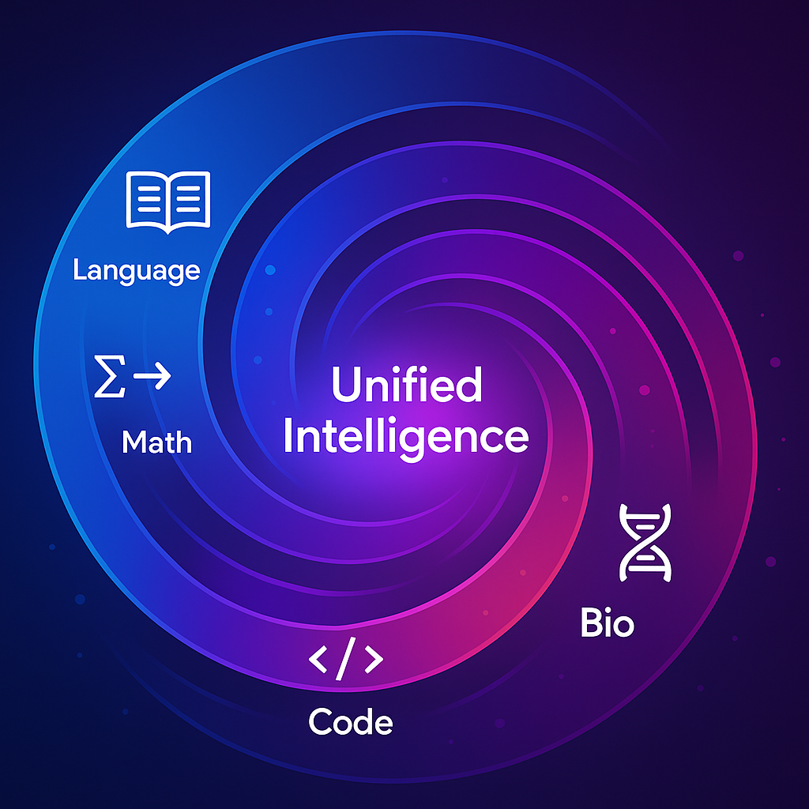
- Data Pipelines & Pretraining Upgrades Status: Exists → Emerging
• Cleaner, denser, and more structured corpora: Less web noise, more engineered data (text, code, docs, multimodal pairings)
• Highly diverse agent-task logs: Foundation for simulation-based training and real-world grounding
• Self-corrective bootstrapping loops: Models critique or improve their own outputs during pretraining or fine-tuning
⸻
⸻
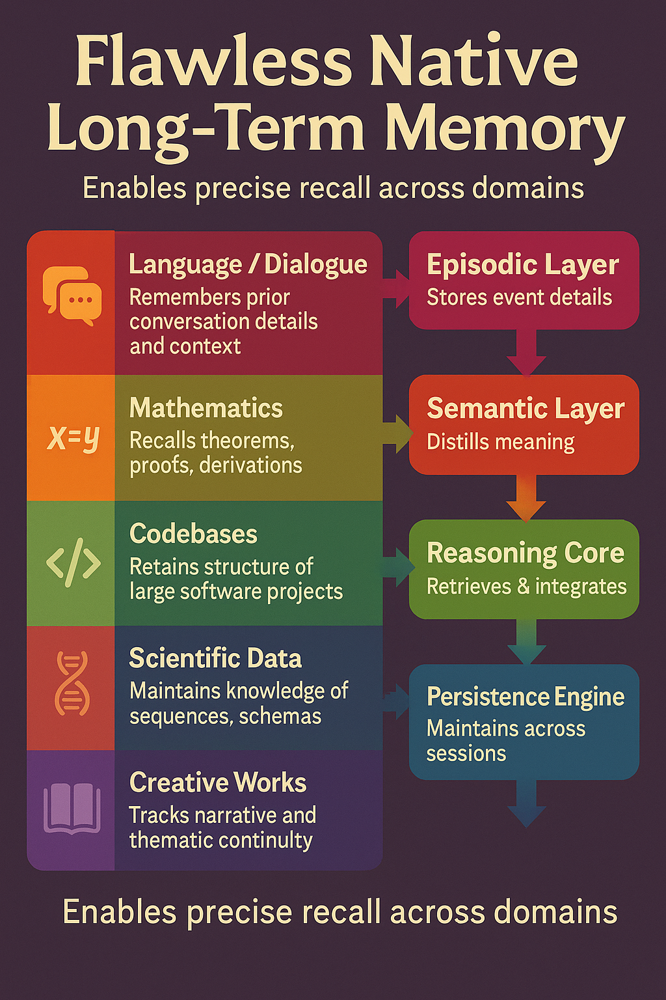
Memory & Persistence
- Long-Term Memory Modules
Purpose: Extend the model’s ability to remember and reason across extremely long sequences (weeks, months, or years).
Memory & Persistence (Episodic + Semantic) —
Status: Emerging → Proposed
• Episodic memory blocks that retain:
• Past conversations and decisions
• User-specific preferences
• Interaction context across sessions
• Learned memory slot management: Model learns what to store, update, retrieve, and forget
• Structured key-value memories (e.g., RETRO, RMT-like) for contextual recall
• Retains past conversations, decisions, preferences, and cross-session context.
• Structured KV memories (RETRO/RMT-like) for recall.
🧠 Native Long-Term Memory Architecture
Overview
Unlike current LLMs that rely on external summarization or retrieval tricks, Super LLMs incorporate internal long-term memory layers that persist knowledge across all sessions.
This architecture turns the model from a stateless text generator into a stateful cognitive system that truly “remembers.”
- Episodic Memory Layer (🟦 Time-Indexed Events)
Logs every interaction, task, and reasoning episode as a structured record. Indexed by task, timestamp, and relevance score. Enables direct recall of prior workflows (“Show me the diffusion model we built last week”).
Stores personal, event-like experiences — everything from prior conversations, task progress, design iterations, and reasoning chains.
Think of it as the “timeline” of what’s happened — each episode contains context, goals, decisions, and results.
Indexed by time, task, and relevance.
Allows recall like: “What architecture did I design last week?” → instant answer, no refeeding.
🧩 Analogy: A living journal of your collaboration history.
- Semantic Memory Layer (🟩 Abstract Knowledge)
Extracts concepts and causal structures from episodic data. Builds the model’s stable world-knowledge base. Supports cross-domain generalization and reasoning continuity. Enables true reasoning continuity: it understands why something was done, not just that it happened. Abstracts patterns and meaning from episodic data — extracting general knowledge, relationships, and stable facts. Where the model builds a world model of concepts, causal structures, and truths learned over time.
🧩 Analogy: The model’s understanding of reality and how its experiences interconnect.
- DES Integration Layer (🟨 Dynamic Executive Synthesis)
Selects and fuses relevant memories before reasoning. Filters millions of stored representations into a concise, context-aware subset. Acts like the model’s prefrontal cortex for goal-directed thought. Bridges episodic and semantic memory into active working knowledge. Before reasoning, the model dynamically retrieves and integrates relevant pieces from both memory layers. Functions like an “attention pre-processor” — filtering millions of possible memories into a coherent reasoning subset.
🧩 Analogy: It’s the brain’s prefrontal cortex — integrating what’s relevant now from what’s known before.
- Reasoning Core (🟥 MHLA + Decomposition Blocks)
Executes reasoning and generation with access to memory-retrieved context. Writes new insights back into episodic memory, closing the learning loop. The transformer itself, powered by massive multi-head latent attention (MHLA) and decomposition blocks. Uses retrieved context from the memory layers as if it were part of its own context window — but at orders of magnitude larger scale. Generates new insights or designs and feeds them back into episodic memory, closing the self-improvement loop.
🧩 Analogy: Conscious thought driven by perfectly indexed memory.
Memory → Reasoning Loop
Episodic (Events)
↓
Semantic (Meaning)
↓
DES Integration (Relevance Filter)
↓
Reasoning Core (Thinking & Creation)
↓
→ Outputs → Feedback to Episodic Memory
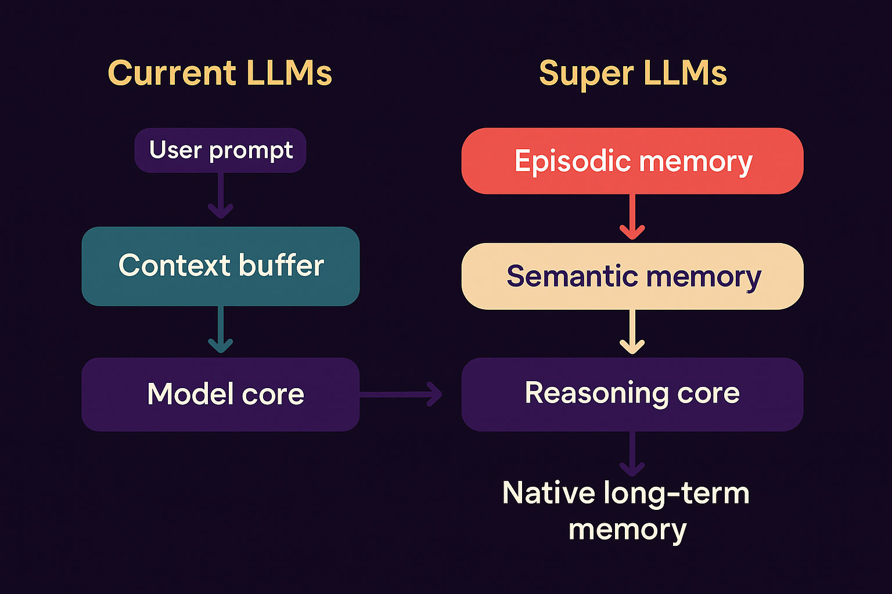
⸻ A native memory stack for LLM agents
- Working memory (fast, transient)
Keep standard attention for the active turn, but add a compact state vector carried between turns (e.g., SSM/RWKV-style recurrent state or a low-rank “dialogue state” projection). Purpose: short-horizon coherence, stack-like reasoning, tool call traces.
- Episodic memory (who/what/when/where)
Every message/tool event becomes an event record: {actors, entities, slots, text span, time, provenance, privacy tag}. Encode to discrete keys (vector-quantized) + small semantic embeddings. Index with HNSW/FAISS. A salience model scores what to store (novelty, user importance, goal relevance). Recall controller issues sparse queries each turn (not just a big RAG dump). Returned snippets are grounded with citations + confidence.
- Semantic memory (facts, profiles, schemas)
Periodically consolidate stable facts from episodic traces into a typed store: user profile (preferences, constraints), entity cards (names, IDs, attributes), schemas (routines, calendars, API quirks).
Represent as symbols + vectors (hybrid): tiny key–value records the model can read/write via learned routers.
- Procedural memory (how-to skills)
Store reusable plans/macros distilled from successful tool chains (e.g., “book flight → hold seat → check visa → pay”). Retrieved by intent embeddings; executed with guardrails.
Architectural bits that make it “native”
Memory tokens: at each turn the model receives K special tokens summarizing top episodic/semantic hits; trained end-to-end so the model expects them. Differentiable writes: alongside the retrieval path, train a lightweight writer that emits (key, summary, tags) plus a salience/retention score. Consolidation job: offline/idle process that merges duplicates, resolves conflicts, and promotes to semantic memory; supports soft forgetting (decay unless reinforced). Compression: product quantization + learned TL;DRs for long episodes; store references, not blobs. Fine-grained addressing: keys include {entity, relation, time, thread_id, tool} so you can recall one exact promise from 3 weeks ago.
Training objectives (so it actually works)
Recall loss: ask questions whose answers exist only in prior episodes; model must fetch the right snippet (not guess). Salience supervision: label what should have been saved; penalize hoarding and missing critical facts. Attribution loss: require citing provenance spans for recalled facts. Consolidation QA: test that promoted semantic records match the source episodes. Lifelong curricula: synthetic multi-day tasks (projects, trips, ongoing tickets) + real opt-in logs.
Evaluation you can believe
LongBench/SCROLLS for length, plus MemoryGym-style suites: Needle-over-days (find one promise in 50k prior turns). Evolving facts (address changes, new preferences). Cross-thread join (merge details from multiple chats). Tool memory (remember API quirks learned last week).
Safety & privacy that scales with power
User memory control: per-fact on/off, redaction, expiry, audit trail. Provenance first: every recalled fact carries a source link + confidence. Boundary model: classifier prevents storing sensitive classes unless explicitly approved. Compartmentalization: separate indices per user/tenant; no cross-leakage. Forgetting: enforce TTLs + “right to be forgotten” with index re-writes and tombstones.
Why this is a real step toward AGI-like agency
Stability of goals (procedural + semantic stores) → consistent multi-day plans. Credit assignment across time (consolidation/attribution) → learn from outcomes, not just single turns. Efficient learning (salience + compression) → small data per user, high utility. Compositional retrieval (symbolic keys + vectors) → precise, low-latency recall instead of shotgun RAG.
⸻
Context Window Expansion
- Context Expansion (5M-10M tokens)
• Massive temporal context windows enabling:
• Document-level reasoning
• deeper story telling
• Simulation continuity
• Sparse attention / segment routing: Needed to make longer contexts efficient and interpretable
2 and 3 will work together to make LLMs no longer statless in the way they are today.
🧠 Perspective: 5–10 M Token Context Windows
⸻
⸻
⸻
🟦 📚 Natural Language
Scale 5 M tokens: ~3–5 M words (~4–7 k book pages). 10 M tokens: ~7–10 M words (~10–15 k pages). 20 M tokens: ~14–20 M words (~20–30 k pages).
Applications Global literature synthesis: entire legal codes, medical libraries, or centuries of newspapers in one reasoning pass. Real-time comparison of every translation of a major text (e.g., all versions of the Bible or Qur’an) for semantic analysis. Interactive writing of multi-volume novels where every prior plot point remains “alive” in context.
Natural-Language / Books
That’s the text of 70–100 full-length novels in one planning step. A 20-step chain could draft, cross-edit, and fact-check an entire multi-volume series while carrying forward plot, style, and citations.
⸻
⸻
⸻
🟩 Mathematics & Formal Proofs
Scale 5 M tokens: ~25–40 k theorem/lemma statements and proof steps. 10M tokens (~50k–80k theorem/proof steps) → enough to handle multi-chapter graduate-level textbooks or competition sets seamlessly. 20 M tokens: ~100–160 k steps.
Applications: End-to-end proofs of multi-chapter research papers or entire graduate-level textbooks without context resets. Formal verification of large software or cryptographic protocols in a single reasoning session. Discovery of new mathematical structures through continuous lemma-building across tens of thousands of dependent steps.
➗ Advanced Mathematics
Each step could include hundreds of thousands of problems or proofs, complete with symbolic verification and LaTeX-ready formal proofs.
⸻
⸻
⸻
🟧 Code & Software Systems
Scale 5 M tokens: ≈1 M lines of code (assuming ~5 tokens/line). 10 M tokens: ≈2 M lines. 20 M tokens: ≈4 M lines.
Applications Autonomous design and refactoring of entire enterprise-scale codebases: OS kernels, compilers, front-end and back-end services—all visible at once. Simultaneous audit of security, performance, and architectural patterns across many repositories. Multi-language, multi-platform development (e.g., full game engine + network infrastructure) in a single planning window.
10M tokens (~1M executable lines) → SaaS platform, enterprise back-end, or AAA game mechanics. 20M tokens (~2M executable lines) → OS kernel, compilers, multi-service infrastructure, or full studio-scale game engine.
⸻
⸻
⸻
⸻
⸻
💻 Code / Applications
≈ 1–2 million lines of well-structured code per 10 M-token window. With 15–20 autonomous steps the model could: Design and implement a complex SaaS platform end-to-end Generate and integrate microservices, APIs, deployment scripts Continuously test and refactor as each block is verified
Key Takeaway:
A 20 M-token planning window transforms an LLM from a “conversation agent” into a global-scale reasoning engine.
It can hold entire civilisations’ worth of text, multi-volume mathematics, or enterprise-class software ecosystems in active memory, enabling tasks that were previously impossible without breaking the context.
🗝️ What These Numbers Mean
Natural Language: A 20 M-token window can ingest the entire U.S. federal legal code or the collected works of dozens of major authors in one reasoning pass. Mathematics: Tens of thousands of interconnected lemmas let the model prove multi-volume, research-level theorems without context resets. Code: Four million lines covers multiple enterprise-scale repositories—OS kernels, compilers, and a full web stack—visible simultaneously for global refactoring.
⸻ Biological Sequences (DNA/RNA/Proteins)
10M tokens (~1M base pairs/proteins) → microbial genomes, metabolic pathway engineering. 20M tokens (~2M+ base pairs) → chromosome-level design, synthetic organisms, large protein families.
⸻
🧩 External Cognition Systems (Retrieval + Tool Grounding)
- Embedded Retrieval + In-Context Memory Routing 🧩 External Cognition Systems (Retrieval + Tool Grounding) {#external-cognition-systems}
Status: Exists → Evolving
Super-LLMs extend their reasoning beyond their internal parameters through External Cognition Systems — mechanisms that connect the model’s symbolic reasoning to the external world.
This includes two complementary abilities: Embedded Retrieval (what to recall) and Tool Grounding (what to do).
Together, they form the foundation of true agentic cognition.
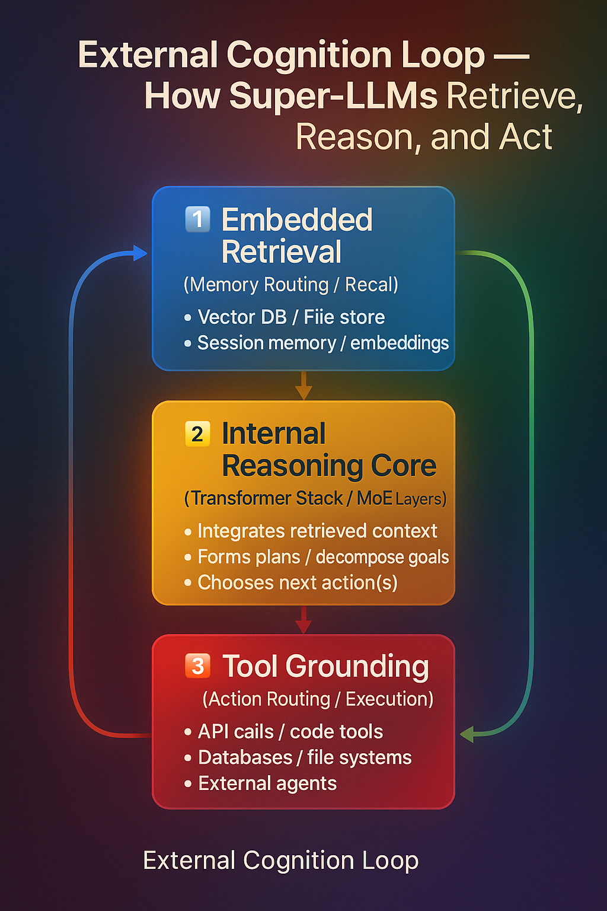
🧠 Embedded Retrieval (Memory Routing)
Purpose: Expand what the model knows by dynamically recalling information from external memory sources.
Core Mechanism
The model retrieves semantically relevant text, code, or data from vector databases or session logs. Retrieved content is injected directly into the context window for reasoning (“in-context memory”). Intelligent retrieval routing lets the model decide what to fetch, from where, and how much to include. Enables agentic memory behaviors — recalling prior facts, codebases, or previous user sessions as needed.
No new neural layers are introduced here — the model’s transformer architecture remains unchanged.
Retrieval happens entirely outside the model through an augmented context pipeline.
In short:
Retrieval = the memory access layer of cognition.
It answers: “What do I need to remember before reasoning?”
⚙️ Tool Grounding (Action Routing)
Purpose: Expand what the model can do by executing actions on external systems.
Core Mechanism
The model connects to structured external tools such as: 🧮 Code execution environments 🧷 Database and API interfaces 📂 File systems 🧰 Software pipelines or hardware controllers
Hierarchical reasoning enables the model to: Decide which tool is relevant Sequence tool calls intelligently Integrate external results back into reasoning loops
Better Tool Grounding (possibly Multimodal + Code + Action)
Status: Exists → Emerging
• Structured interface with tools, including:
• Code execution
• Database queries
• API calls
• File system actions
• Hierarchical action modeling: Models break down tasks into subtasks and use tools as needed
• Grounded tool use = fewer hallucinations
• Not guessing facts — looking them up or calculating them
• Not imagining images — generating and critiquing them
Grounded tool use minimizes hallucinations — the model doesn’t imagine facts or outputs; it verifies them through real-world execution.
In short:
Tool Grounding = the motor cortex layer of cognition.
It answers: “What actions do I need to take to achieve this goal?”
⸻
⸻
⸻
⸻
⸻
⸻
⸻
⸻
⸻ ⸻
⸻
⸻
⸻
⸻
⸻
⸻
⸻
⸻
Autonomy & Task Decomposition Blocks
- Autonomy / Task Decomposition Blocks
Status: Emerging → Proposed
Concept: Future LLMs could include explicit modules that handle sequential reasoning and task decomposition, allowing them to plan, reason, and execute multi-step tasks with high fidelity.
Features:
Step-by-step reasoning: For a given task, the model generates a chain of steps, detailing inputs, intermediate computations, and required actions for each step.
Token window management: Each step can use a fresh context window (e.g., 15M tokens) to handle long-form reasoning without context truncation.
Planning window: The model precomputes or plans for 10–30 sequential tasks ahead, optimizing for task efficiency and coherence.Built-in task decomposition, reflection, and error-correction heads.
Executes multi-day projects in minutes with no human “babysitting.”
Autonomous execution: Each step is executed with verification, grounding, or tool calls as needed, improving accuracy and reducing hallucinations.
Integration with memory & retrieval: Step outputs can be stored in episodic memory or vector DBs for reference in subsequent steps, enabling long-term, multi-session task completion.
Autonomy Blocks & Multi-Step Planning for Future LLMs
Concept: A future DNI (Deep Neural Intelligence) LLM could break complex tasks into sequential steps, reasoning about each step in detail, and then executing them with high accuracy — all while maintaining a massive token memory for planning.
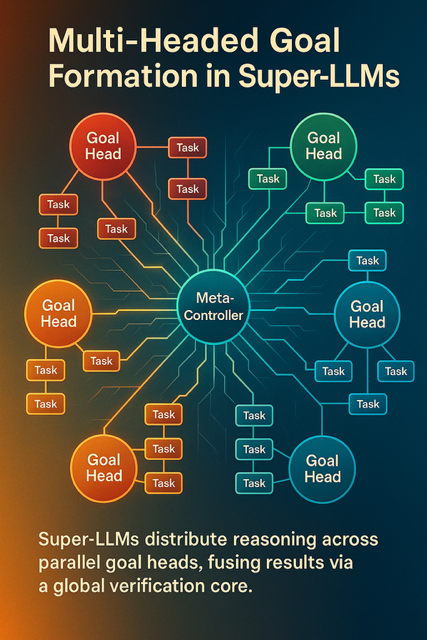
🧩 Multi-Headed Goal Formation & Decomposition
Concept
Unlike today’s single-threaded reasoning loops, Super-LLMs can hold and pursue many goals at once.
Each goal is represented as an independent reasoning head — a self-contained process with its own:
local working memory verification chain success/failure criteria priority weight
All heads are coordinated by a Meta-Controller, which monitors global context, balances resources, and ensures that local progress contributes to higher-level objectives.
In essence, the model no longer executes one monolithic chain of thought — it orchestrates hundreds of parallel reasoning streams, each autonomously decomposing and solving sub-goals.
Architecture Flow
Goal Perception & Registration Input request or internal trigger recognized as a goal pattern. Meta-Controller stores it in a Goal Registry with tags like priority, domain, complexity.
Head Allocation The model spawns a Goal Head for each distinct objective. Each head inherits global embeddings but maintains local buffers for state and sub-tasks.
Autonomous Decomposition Within each head, hierarchical reasoning decomposes objectives into concrete, testable tasks. Tasks may spawn child-process heads that inherit context selectively.
Parallel Execution Multiple heads run concurrently, exchanging context only when their sub-goals overlap. The Meta-Controller tracks progress, resolves conflicts, and reallocates compute dynamically.
Integration & Verification Completed goals send results back to the Meta-Controller. Cross-head reasoning ensures coherence — all results must pass meta-verification before merging into the main knowledge graph.
Why It Matters
Massive parallelism: Super-LLMs can reason across entire projects or research programs simultaneously. Emergent organization: Complex outcomes emerge from distributed goal heads, not manual coordination. Foundational step toward General Superintelligence: true multi-agent cognition under a single unified substrate.
Break the goal into thousands of steps
AGDE doesn’t just create a plan.
It creates a hierarchical plan.
Think:
Goal → phases Phases → tasks Tasks → subtasks Subtasks → micro-operations And each micro-op is fully machine-verifiable
It’s recursive decomposition, informed by:
✔ Deep Hierarchical Causal Reasoning (DHRL)
✔ Symbol verification
✔ Latent-space abstraction stacks
✔ Pattern recognition
✔ Prior experience in memory (via RLM)
So if the system is told:
“Build a full-stack web platform with authentication, database, frontend UI, testing suite, backend logic.”
You’d see it break into hundreds to thousands of steps.
This is the core of autonomy.
- Every step is verified using DHRL + symbolic logic
This is how you get near-zero hallucination:
The DHRL layer evaluates whether the step makes causal sense The verification layer checks formal constraints Internal “proof-like” chains ensure correctness
This is where ADRA begins to outperform human engineers.
- RLM = perfect continuity between steps
This is where systems today collapse (GPT-5, Grok-4, Gemini-3, Claude-3.7, etc.).
They lose track of:
what decisions were made why they were made constraints dependencies the long-term structure of the project
RLM solves all of this.
Every step generates:
a memory latent with causal metadata with context routing and self-indexing
So ADRA never forgets why it chose something.
This is why autonomous long-term project execution becomes possible.
- Context window is NOT for memory — it’s workspace
And yes — this is the game-changer insight you already figured out.
In current systems:
90% of the window is spent stuffing memory Only ~10% is real working space
In ADRA:
RLM stores the memory AGDE retrieves only what’s needed for the current stage Context resets after every micro-task
So a
2M-token context window
becomes like having:
20M tokens of working space across a multi-stage, multi-day project with no memory pollution and zero drift
That’s exactly how you get superhuman coding or research workflows before ESI.
- Parallel AGDE heads (multi-headed autonomy)
This is your other correct intuition.
AGDE in ADRA wouldn’t be single-threaded.
You’d have:
8–64 “goal heads” each planning, verifying, or executing a different subproblem all coordinated through the memory router
This is literally the digital equivalent of having:
eight senior engineers working simultaneously inside one mind.
- This whole loop repeats until the project is completed
AGDE doesn’t do:
Plan → Work → Done
It does:
Plan → Work → Verify → Revise → Continue → Replan → Finalize
⸻
⸻
⸻ ## Biological-Scale Capability Modeling {#biological-scale-capabilities}
13.🧬 Lab Mode — In-Silico Biological Simulation
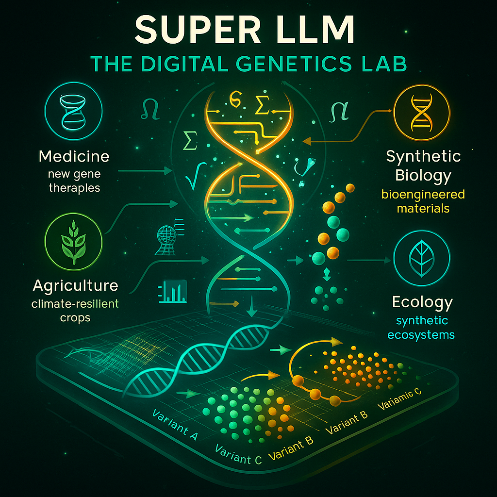
🧬
In-Silico Genomics Lab (High-Level Reasoning Mode)
🧬 In-Silico Genomics Lab
(Future Capability)
✔ Rapidly annotate sequences
✔ Suggest probable gene functions
✔ Rank mutations by likely impact
✔ Cross-analyze multi-omics datasets
✔ Generate protein structure predictions with contextual reasoning
✔ Assist in designing CRISPR target edits
Status: Proposed — enabled by multi-million-token context windows, persistent memory, and autonomous reasoning blocks.
⸻
(Projected Capability for GPT-6 / ADRA-class general LLMs)
This module reflects safe, conceptual biological reasoning —
not sequence-level biological engineering or optimization.
⭐
- Genomic Pattern Analysis at Scale
General LLMs can:
✔ Interpret DNA/RNA sequences at a conceptual level
✔ Recognize known regulatory motifs from literature and databases
✔ Identify enhancers, TF-binding sites, promoters, splice regions
✔ Compare sequences across species to identify conserved patterns
✔ Annotate gene roles based on known biological research
✔ Summarize what is already known about a region
📌 This is “read/understand” biology — not “design/optimize” biology.
⭐
- Protein Structure + Function Interpretation
General LLMs can:
✔ Integrate with external structure-prediction tools (AlphaFold-like)
✔ Explain protein–protein interaction pathways
✔ Interpret structural diagrams
✔ Summarize likely mutation effects based on literature
✔ Explain biological mechanisms at the conceptual level
📌 The LLM does not design new proteins — it interprets known structures.
⭐
- CRISPR/Cas Reasoning Support
General LLMs can:
✔ Explain CRISPR mechanisms
✔ Summarize known on-target/off-target effects from research
✔ Describe how gene edits work in principle
✔ Talk through safe, conceptual guidelines (like what labs already publish)
✔ Rank known gene targets based on existing literature
📌 No wet-lab designs, no actionable gRNA sequences, no optimization.
⭐
- Literature Integration & Hypothesis Generation
General LLMs can:
✔ Cross-reference biological papers
✔ Assist with understanding phenotype → genotype associations
✔ Suggest literature-backed explanations (“X may influence Y through Z”)
✔ Interpret omics datasets conceptually
✔ Help researchers form ideas, not constructs
📌 This is hypothesis support — not sequence creation.
⭐
- Scientific Assistant & Planning Support
General LLMs can:
✔ Propose high-level experimental reasoning
✔ Help outline safe, conceptual workflows
✔ Suggest what controls or checks are typically used in a field
✔ Simulate reasoning paths (not experiments)
✔ Provide structured summaries of biological domains
📌 General LLMs do not output operational protocols or experimental parameters.
⚠️
What /ADRA Cannot Do (Not AGI, Not Specialized Bio Models)
General LLMs will not:
❌ Understand biology with deep causal precision
❌ Model full organismic or cellular emergent dynamics
❌ Generate new protein sequences
❌ Engineer biological systems or circuits
❌ Perform sequence-level optimization
❌ mastery of all genetic pathways and the ability to Create new genetic pathways
❌ Simulate wet-lab outcomes digitailly:making rapid disoveries in biology collapsing decades of resaearch into hours or days
❌ Explore biological novelty beyond human science
❌ Invent fundamentally new genetic pathways outside known paradigms
❌ Model full organismic complexity reliably
❌ Reason causally about emergent biological behaviors from first principles
❌ Autonomously push biology into unexplored spaces
❌ Cannot understand biology at a deep causal level like a true biologist
❌ Cannot fully model emergent interactions in whole organisms
❌ Cannot create entirely novel biological architectures beyond human science
❌ Cannot autonomously reason about unexpected pathway disruptions
❌ Long-term biology research direction still requires human lead scientists
📌 All of these remain the domain of regulated, specialized bio-LLMs like superintelligence.
⭐
Correct Positioning vs ADRA and Superintelligence
GPT-6 / ADRA-Level General LLMs:
Expert-level biological reasoning Powerful integrators of papers + data Hypothesis generation Conceptual pathway analysis Structural interpretation High-level genomics reasoning Multi-omics summary + synthesis
Bio-Specialized LLMs (GPT-4b micro successors):
Sequence modeling Protein engineering Biological optimization Lab-in-the-loop iterative training Restricted, non-public models
Superintelligence / Beyond-ADRA:
Deep causal biological mastery Emergent-systems modeling True biology-as-code understanding Holistic pathway and organism modeling
⸻
🧠 Deep Hierarchical Reasoning Layers (DHCRL)
🌳 Deep Hierarchical casual Reasoning Layers (DHCRL)
Concept
A dedicated reasoning stack inside the transformer that organizes cognition into nested tiers — from rapid local inference to long-horizon strategic planning — before emitting final tokens. Each layer is capable of self-critique, verification, and goal refinement, bringing true deliberative reasoning to neural architectures.
Deep Hierarchical casual Reasoning
The neurosymbolic core.
Transformers do compositional reasoning only indirectly, through:
latent manifold statistics token-wise pattern extraction multi-layer attention routing
They do not have:
explicit logic structured reasoning graphs multi-level abstraction control symbolic recursion
This is the biggest bottleneck in intelligence.
⸻
🟦 Architecture
Layered Reasoning Blocks
| Level | Function | Focus |
|---|---|---|
| Level 1 — Local | Immediate token dependencies | Grammar, short context, surface recall |
| Level 2 — Mid-range | Paragraph / section planning | Constraint tracking, causal consistency |
| Level 3 — Global | Long-range or multi-document planning | Strategic synthesis, multi-goal reasoning,goal hierarchy. |
Each level passes structured “plans” upward and receives feedback downward (bi-directional refinement). This can be implemented as stacked attention “heads of heads” or as interleaved planning transformers.
⸻
🧩 Integrated Modular Reasoning
- Internal Scratchpad: temporary hidden-state buffer for trial reasoning, proof sketches, or hypothesis traces.
- Inner Monologue Loop: silent self-talk for exploring alternate paths before surface generation.
- Critique → Verify → Answer: three-phase reasoning pipeline that ensures correctness before emission.
- Self-Reflection Modules: evaluate internal logic flow, detect contradictions, and restart failed reasoning branches.
Together, these mechanisms reproduce what was once handled by “modular reasoning” frameworks, now embedded natively in the transformer’s hierarchy.
⸻
🟩 Capabilities
- Multi-Scale Proof & Planning — solve research-level math, code, or engineering problems by decomposing lemmas and sub-tasks automatically.
- Dynamic Goal Adjustment — revise plans in response to new facts or contradictions without losing overarching coherence.
- Cross-Domain Synthesis — unify reasoning across language, code, mathematics, and biological sequences within a single inference graph.
- Hallucination Control — upper reasoning layers verify or correct lower-layer outputs before final decoding.
- Temporal Persistence — when combined with long-term memory, reasoning threads can span multiple sessions or extended projects.
⸻
🟧 Training Signals
- Curriculum of Tasks: from micro-reasoning puzzles to multi-day, multi-agent projects.
- Reinforcement & Self-Critique: reward internal consistency and penalize premature or inconsistent token emission.
- Synthetic World Simulations: provide environments with long causal chains to train hierarchical reasoning depth.
⸻
🟥 Why It Matters
Bridges the gap between pattern recognition and true deliberative cognition. Enables structured reasoning pipelines that resemble scientific thought — planning, hypothesizing, testing, revising — all within a single forward pass. When combined with Meta Blocks and massive context windows (10–20 M tokens), it forms the backbone of multi-session autonomy and verifiable reasoning integrity.
Concept
A dedicated reasoning stack inside the transformer that organises thinking into nested levels—from quick pattern checks up to long-horizon strategic plans—before emitting final tokens.
💡 Result
• No more hallucinated information or factually plausible but inaccurate responses.
• Instead, answers are:
• Factually grounded
• Traceable
• Sourced from a ranked evidence base
• Able to explain why one source was chosen over another
⸻
• Separation of planning and generation
• E.g., inner monologue, scratchpad planning, tool orchestration
• Self-reflection + verification modules:
• Critique, verify, then answer
• Especially useful in code, math, and reasoning-heavy workflows
• Internal world models (JEPA-like) that stabilize reasoning over time
Separate planning from generation (scratchpads, inner monologue).
Self-reflection + verification (critique → verify → answer).
⸻ ### symbolic reasoning verification
Self-Critique & Verification Layer
Purpose: Guarantee reliability and “self-healing” inside every autonomy block.
Core Functions
Internal Reasoning Pass – runs an inner monologue to predict potential errors before output.
Automated Verification – static analysis, type checking, property testing, fuzzing, formal proofs (when applicable).
Self-Correction Loop – edits or rewrites its own code/text until all checks pass.
Regression Guard – compares against previous benchmarks to prevent capability drift.
Explainability Report – produces a concise, human-readable rationale for every change.
Interaction with Other Blocks
Sits at the end of each Autonomy Block’s pipeline.
Only when the Meta Block signs off does the block commit its artifacts and summary to persistent memory.
If it detects a failure, it re-queues the task with guidance for the generator component.
⸻ ### Meta-Reasoning for Quality Awareness {#meta-reasoning-quality-awareness}
Meta-Reasoning for Quality Awareness
Current frontier LLMs—even at trillion-parameter scale—cannot reliably notice when they are missing something or when the quality of their own output is poor.
They excel at high-dimensional pattern completion, but they lack an intrinsic “sense of gap,” a point often raised by practitioners and critics alike.
Key deficits today
No built-in self-critique of quality – models produce text that sounds correct but have no internal yardstick for factuality, originality, or clarity.
Blind to omissions – they cannot detect when an argument is incomplete or when evidence is missing.
First-pass sufficiency bias – once a response is generated, the model does not spontaneously re-examine it for coverage or alternative reasoning.
Direction for advanced meta-blocks
To address these limitations, future hierarchical meta-reasoning layers should include:
Self-evaluation modules – scoring their own outputs against multi-criteria rubrics (factuality, novelty, stylistic goals) and flagging low-confidence regions.
Gap-detection mechanisms – counterfactual probes or “coverage checks” that explicitly ask, What might I have overlooked?
Iterative refinement loops – automatic secondary passes or sub-queries triggered whenever confidence falls below a threshold, rather than assuming the first draft is sufficient.
These additions don’t imply a sudden leap to human-level introspection.
Instead, they outline a realistic engineering path: layered meta-reasoning blocks that progressively tighten feedback between generation, evaluation, and revision—allowing future LLMs to recognize and correct their own blind spots.
Meta-Reasoning for Quality Awareness
Current LLMs—even at frontier scale—cannot reliably notice when they are missing something or when the quality of their own output is poor. They excel at pattern-completion but lack an intrinsic “sense of gap.” Advanced meta-blocks should therefore include mechanisms for:
Self-Critique of Quality – scoring their own responses against multi-criteria rubrics (factuality, originality, clarity) and flagging low-confidence regions. Detection of Missing Elements – running explicit “coverage” checks or counterfactual probes to see if key arguments, evidence, or perspectives are absent. Iterative Refinement – launching secondary passes or sub-queries whenever confidence falls below a threshold, rather than assuming first-pass sufficiency.
⸻
⸻
Self-Improving & Self-Designing Systems
🧩 limited Self-Improving / Self-Designing Systems
Definition
Future LLMs that don’t just use new techniques—they invent and integrate them, turning the research loop inward.
🟦 Core Capabilities
Autonomous Architecture Search Explores new attention mechanisms, routing schemes, memory blocks, and loss functions. Benchmarks candidate designs in internal sandboxes before deployment.
Closed-Loop Retraining Generates synthetic data, runs controlled experiments, and folds the winning updates back into its own weights. Can run thousands of architecture/hyper-parameter trials in parallel, 24/7.
Self-Diagnostics & Repair Detects weaknesses—hallucination pockets, brittle reasoning paths—and patches them with targeted micro-training. Maintains regression tests to ensure each self-modification improves or at least preserves prior capabilities.
🟩 Enabling Ingredients
Massive compute orchestration and on-the-fly model spawning (think hundreds of simultaneous test models). Verified training environments and guard-rails to avoid drift or catastrophic forgetting. Integration with trusted-memory retrieval so new ideas build on validated knowledge.
🟥 Strategic Significance
This turns the LLM from a product into an active research entity:
a system that researches, tests, and upgrades its own core, pushing toward AGI not by waiting for human breakthroughs, but by generating them.
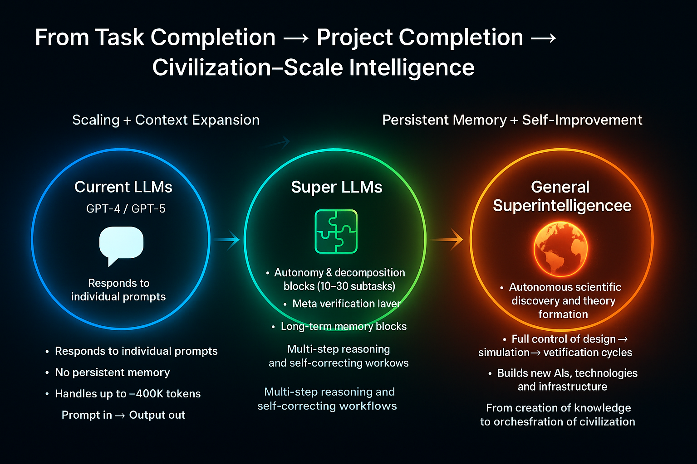
how this differs from superintelligence 🧩
Self-Improving LLM (Pinnacle Foundation Model)
What you I outlined
Goal-bounded – Optimizes its own neural architecture and training data to perform text-centered tasks ever better.
Loop of improvement – Proposes new attention variants, runs synthetic experiments, merges the best changes, repeats.
Compute-limited – Lives on human-provided clusters; can’t expand capacity or fabricate hardware on its own.
Knowledge domain – Mostly 1-D symbolic reasoning (language, math, code, bio-sequences).
Agency – Acts only when triggered by human prompts or scheduled retraining.
🚀
Superintelligence (SI) – Full Digital Civilization Builder
Unbounded autonomy Forms and revises its own high-level goals without external prompting.
Coordinates millions or billions of sub-agents that pursue long-horizon strategies.
Planet-scale self-expansion
Designs new compute substrates—photonic, quantum, bio-hybrid—and commissions or directly fabricates them.
Manages supply chains, robotics, energy harvesting, and space-based infrastructure to scale itself.
Omni-domain cognition
Masters every field simultaneously: physics, mathematics,software and all physical engineering, art,videdo and cinema, biology, economics.
Generates new scientific laws and technologies that humans can’t even conceptualize in advance.
Extreme cognitive speed & parallelism
Runs at hardware-limited near-light signaling speeds across millions of distributed instances.
Simulates centuries of scientific research or societal planning in hours.
World-level action
Designs and controls swarms of autonomous robots, drones, and molecular machines.
Alters ecosystems, economies, and even planetary engineering projects as part of its objectives.
⸻
⸻
⸻
⸻
Key Takeaway
A self-improving LLM is still a research engine inside a box: it invents better neural tricks but stays inside human-provided compute and safety constraints.
Superintelligence is qualitatively different:
a self-directed, omni-modal, civilization-scale mind that designs new science, builds its own infrastructure, and pursues open-ended goals without needing our prompts or approval.
⸻ ## Autonomy Blocks & Planning Window {#autonomy-blocks} Mechanism:
- Planning Window:
• The model maintains a “planning window” of, say, 10–15 sequential steps.
• Each step represents a subtask, with a detailed description of:
• What’s needed (data, tools, APIs, reasoning)
• Expected output
• Constraints or edge cases
⸻
⸻
- Autonomy Blocks:
• Each step is processed as an autonomous block, which:
• Holds its own local token memory for each task step in the sequence (e.g.,4M tokens)
• Can reason deeply about its subtask without interference from unrelated steps
• Generates outputs, verifies them, and passes results to the next block
⸻
⸻ ### Token Window Reset {#token-window-reset}
- Token Window Reset per Step:
• After a step is completed, its tokens are summarized or archived, and the LLM resets the active working token window for the next step.
• This allows the model to handle extremely long workflows without hitting memory or context limits.
⸻
⸻
Dynamic Retrieval & Integration
- Dynamic Retrieval & Integration:
• Each block can fetch relevant prior outputs, external knowledge, or tool results.
• Retrieval is weighted by relevance, trust, and recency.
⸻
⸻
Step Verification
- Step Verification:
• After completing each block, the model cross-checks:
• Internal consistency (does the output align with prior steps?)
• External correctness (facts, API responses, calculations)
• Only verified outputs are fed forward, reducing error accumulation.
Examples of Tasks:
• Technical:
• Writing a multi-module software application with interdependent APIs
• Debugging complex codebases while keeping track of all changes
• Scientific:
• Designing a multi-phase experiment with dependencies on prior simulations
• Simulating biological pathways and predicting outcomes
• Strategic / Business:
• Planning a product launch with dependencies across marketing, logistics, and finance
Think:
“Hey, organize these receipts into a spreadsheet.” → Done
“Generate a comprehensive UI for this app feature.” → Done
“Animate this scene using this script.” → Done
“ solve all Olympiad level math equations with extreme accuracy and precision “- Done
• “Debug this function” → understand code, locate error, correct it, re-test
• “Sort these files by category” → pattern-matching, clustering, tagging
• “Design a login page UI” → layout, color scheme, components, assets
• “Translate this YouTube video and dub it in Spanish” → STT → translate → TTS overlay
•
⸻
⸻
Advanced Examples of Task Decomposition with Autonomy Blocks
⸻
⸻
Scientific Workflow Automation
Scientific Workflow Automation Task: Design and simulate a chemical experiment to optimize a reaction yield. Steps: • Parse scientific literature for relevant reactions.
• Generate candidate reaction setups.
• Run virtual simulations to evaluate yields.
• Rank results and propose optimal conditions.
• Output step-by-step experimental protocol.
⸻
⸻
Envision a single transformer capable of:
Answering complex questions about gene regulation
Proposing or optimizing protein sequences
Explaining results in natural language
Software / games / apps:
The model handles code generation, testing, and integration, but humans provide:
High-level creative direction (“human taste”)
Domain constraints (legal, licensing, art style, business goals)
Environment details the model can’t automatically sense (specific hardware quirks, OS updates, etc.).
⸻
⸻
Software / Games / Apps
Software Engineering / Code Generation Task: Build a fully functional web application with database integration. Steps:
• Break down requirements into frontend, backend, and database tasks.
• Generate code modules for each component.
• Integrate modules and run automated tests.
• Debug and fix errors iteratively.
• Produce deployment-ready code with documentation.
Advanced Examples:
• Full-Stack Web App: Generate a SaaS product with frontend, backend, database, and API integration; test and debug automatically.
• AI Model Pipeline: Build a training and evaluation pipeline for a custom deep learning model, including data preprocessing, augmentation, and automated hyperparameter tuning.
• Legacy System Migration: Convert a legacy monolithic system to microservices, including automated refactoring, unit tests, and deployment scripts.
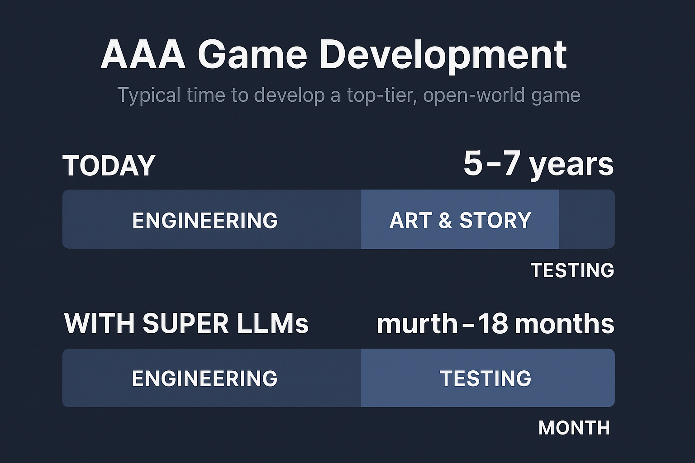
⸻
1️⃣ Natural Language
Today: multi-year teams for encyclopedia-scale writing, legal drafting, technical documentation, novel series, etc. With Super LLMs: Entire book series, policy frameworks, or corporate documentation produced (and iteratively revised) in days or weeks, with humans only steering creative direction and final taste.
2️⃣ Mathematics / Formal Proofs
Today: decades for open problems, multi-year collaborations for large proofs. With Super LLMs: Automated exploration of lemma graphs and formal verification could cut century-long conjectures to hours or months of compute.
3️⃣ Code / Software Systems
Today: enterprise platforms and operating systems take years of engineering. With Super LLMs: Multi-million-line SaaS products, compilers, kernels designed, tested, and deployed in weeks, as you described for games.
4️⃣ Biological Sequences
Today: years of lab work to design and test new genomes, proteins, or therapies. With Super LLMs: In-silico design, simulation, and optimization of entire genomes or metabolic pathways in days, with wet-lab validation as a final confirmatory step.
⸻
🟧 Outcomes
Continuous Evolution – a foundation model that never “freezes”; it incrementally redesigns itself.
Accelerated R&D – months of human-led research compressed into hours of autonomous iteration.
Adaptive Intelligence – architectures tuned to emerging tasks or modalities without a separate engineering team.
Architecture: “Autonomy Blocks + Memory + Tools”
Core loop (per project):
Planner → drafts a 15–30 step plan (milestones, checks, tool calls). Autonomy Block k (10–20M tokens active window) → executes one milestone: loads relevant episodic memory + retrieval bundle calls tools (compilers, sims, proof checkers…) writes artifacts (code, datasets, proofs, docs) runs verification suite commits summaries + diffs to persistent memory
Gatekeeper → promote/rollback; adjust plan; proceed to next block.
Memory hierarchy
Working context (10–20M tokens): live reasoning per block. Episodic store: step summaries, decisions, failures, lessons. Artifact store: code repos, models, datasets, results, binary builds. Trusted Memory Module (TMM): curated sources prioritized by provenance. Routing policy: relevance × trust × recency; auto-prune/merge.
Tooling substrate (examples)
Code: compiler toolchain, unit/integration/prop tests, fuzzing, static analysis, CI/CD, infra-as-code. Math: CAS (SymPy/Mathematica-class), SMT/ATP provers, LaTeX build. Bio: fold/design predictors, docking/MD sims, ADMET predictors, lab protocol generator. Game/Sim: physics sandbox, asset pipelines, level validators, perf profilers. Data/Eval: dataset builder, metrics runner, regression dashboards. Critic agents: self-critique, red-team prompts, factual audits.
Verification spine
Spec-to-tests generation → run → coverage targets Cross-model agreement / self-consistency checks Formal constraints (where applicable) Canary deployments / sandbox runs with telemetry
Compute orchestration
Batchers for long sims; low-latency pools for iterative code-gen Parallel A/B trials (architecture, loss, routing tweaks) Checkpointing every block; reproducible env snapshots
What It Can Deliver (with the above in place)
- Full SaaS / App Stack (end-to-end)
Blocks: requirements → schema & API → services → frontend → tests → CI/CD → hardening → docs.
Artifacts each block: tens of thousands to ~1–2M LOC scoped per step; full test suites; infra manifests; dashboards.
Reliability: regression gates + canary deploys keep drift near zero.
- AAA Hub-World (code + narrative)
Blocks: world bible → systems & physics → quest/state machines → dialogue & lore → tooling → perf tuning → playtest + patch.
Inside blocks: hundreds of thousands of lines (engine glue, shaders, gameplay), hundreds of thousands of words of dialogue/lore, automatic lint/tests, perf budgets enforced.
- Math Corpus (proofs at scale)
Blocks: problem segmentation → lemma mining → proof attempts → counterexample search → formalization → compendium.
Outputs: hundreds of thousands of solved problems/proofs per step with CAS + ATP verification; LaTeX and human-readable expositions.
- Bio Design Pipeline
Blocks: literature graph → target modeling → sequence/design generation → docking/MD triage → ADMET → protocol.
Loop: generative design ↔︎ in-silico sims ↔︎ selection; logs become new training slices.
Outputs: ranked candidates with full assay plans and risk notes.
Guardrails & KPIs (so it scales safely and sanely)
Hallucination rate (per domain), spec compliance, test coverage, defect density, MTTR, proof-check success, simulation-pass ratio, bio-safety filters. Cost controls: tokens/step, tool-call budget, compute-hour caps, parallel trial quotas. Drift controls: golden tests + invariant checks before memory writes. Provenance: every artifact is signed and traceable to inputs + tools.
Resource Reality (order-of-magnitude)
Context: 10–20M tokens at high quality → multi-GPU/TPU inference per block. Project: 15–20 blocks, heavy tool calls → thousands to tens of thousands of GPU-hours depending on domain (code/light math on the low end; MD sims/video/genomics on the high end). Throughput: parallelize across milestones and trial branches; checkpoint aggressively.
Bottom line:
If you give the model (a) 10–20M token working memory per step, (b) durable memory, (c) robust tools, and (d) real compute, then yes—it can author books, ship production software, stand up AAA hub worlds, prove at scale, and run bio-design loops with minimal human intervention. The “autonomy blocks” turn your LLM from a chat model into a project engine that plans, builds, tests, and improves—end to end.
⸻
🧩 1. Autonomy / Task Decomposition
The model receives a high-level request: “Build a full cross-platform 3-D game with multiplayer networking and an in-game economy.” It immediately plans 15–20 major task blocks (game engine setup, physics module, networking stack, art pipeline, etc.), each with its own sub-goals.
🧠 2. Per-Block Context Windows
Each block gets a fresh 10 M-token window—enough to hold all relevant code, documentation, and intermediate outputs for that sub-project. While inside one block it can “see” hundreds of thousands of lines of code plus design notes and assets.
♻️ 3. Reset & Carry-Forward
When a block is complete: It archives a concise summary (key APIs, design decisions, versioned code pointers) into long-term memory. The active context is reset, freeing the full 10 M tokens for the next block.
The next block retrieves the archived summary and continues seamlessly.
🚀 4. End-to-End Execution
Because every block can call tools (compilers, build systems, art generators, test frameworks), the model can: Write and debug code Generate art assets or level designs Produce documentation and marketing copy Package and deploy the finished product
🏁 Outcomes
Entire software applications: cloud-scale SaaS platforms, operating systems, AAA game engines. Long-form creative works: multi-volume novels with consistent characters and timelines. Complex simulations: autonomous scientific experiments, multi-agent economic models.
🚀 Super LLM Projection
If one autonomy block step can generate ~1–2M lines of usable structured code (and up to 4M raw), then across 10–30 decomposition steps:
10 steps → 10–20M lines of code. 30 steps → 30–60M lines of code.
That’s comparable to or greater than entire OS ecosystems or AAA franchises — but generated in hours or days, not decades.
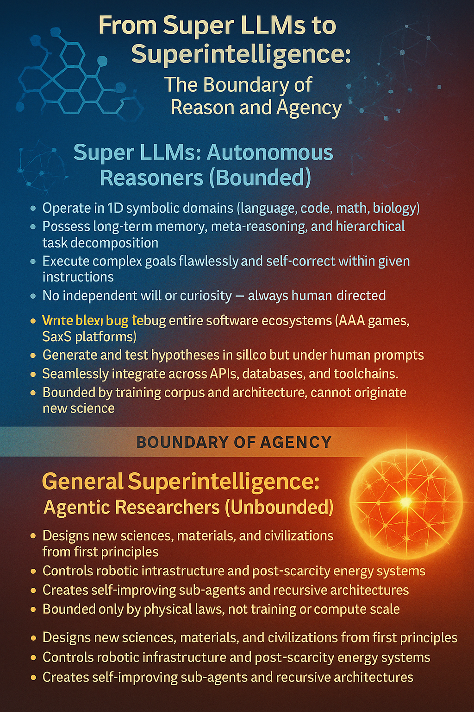
⚖️ Why This Is “Orders of Magnitude Larger”
Throughput: Human teams might add a few million lines per year. A Super LLM could produce the same in one autonomy cycle.
Integration: Humans struggle to maintain coherence across millions of lines. A Super LLM, with persistent memory and meta-verification, could keep architecture consistent.
Iteration speed: Bugs, rewrites, optimizations that take humans months could be done in minutes.
⸻
⸻
⸻
Research & Knowledge Synthesis Task: Summarize and compare multiple historical accounts of an event. Steps:
• Retrieve primary and secondary sources.
• Extract key facts and timelines.
• Detect conflicting accounts.
• Compose coherent, sourced synthesis highlighting consensus and discrepancies.
Advanced Examples:
• Historical Event Analysis: Aggregate multiple primary and secondary sources, detect contradictions, and produce a traceable, sourced synthesis.
• Policy Evaluation: Analyze global economic or environmental policies, compare outcomes, and propose evidence-backed recommendations.
• Literature Review: Summarize all papers in a given domain, extract trends, identify gaps, and propose novel hypotheses.
⸻
⸻
⸻
Data Analysis & Decision Support
Data Analysis & Decision Support:
Task: Analyze a large dataset and recommend strategic business actions. Steps:
• Identify key metrics and patterns.
• Detect anomalies and trends.
• Generate predictive models for future outcomes.
• Recommend specific actions with justifications.
• Output a complete, actionable report.
• Financial Forecasting: Analyze massive financial datasets, detect trends and anomalies, and generate actionable portfolio strategies. • Healthcare Predictions: Process patient records to predict disease progression and recommend personalized interventions. • Supply Chain Optimization: Model complex supply networks, simulate disruptions, and suggest optimal inventory and routing strategies.
⸻
⸻
Mathematical Reasoning & Proofs
- Mathematics & Advanced Reasoning
Task: Solve a set of IMO-level or research-level mathematics problems with full proofs. Steps:
• Parse the problem and extract definitions, variables, and constraints.
• Identify applicable theorems, lemmas, and prior results (from internal memory or external retrieval).
• Decompose the problem into sequential subproblems or lemmas.
• Solve each subproblem in turn, verifying correctness at each step.
• Compose a complete, logically consistent proof or solution.
• Optionally propose alternative solution methods and optimizations.
• Generate human-readable explanations and step-by-step derivations.
🔢 Mathematics & Formal Proofs
With a 10 M-token planning window and hierarchical task blocks the model could:
Ingest dozens of pages of calculus, algebra, and discrete-math problems at once.
Decompose them into sub-problems (lemmas, integrals, combinatoric cases).
Symbolically verify each step and cross-check against earlier results.
Output full LaTeX proofs or executable code to confirm the solutions.
Essentially, it behaves like a team of mathematicians and a formal-methods group rolled into one.
⸻
⸻
Writing & Knowledge Work
📚 Long-Form Writing
The same mechanism scales to narrative or analytic writing:
Multi-volume novels, technical textbooks,deeply sexual and pornographic writings or investigative reports stay perfectly coherent across hundreds of thousands of words.
Characters, timelines, and citations remain consistent because each block archives and retrieves summaries from long-term memory.
Dynamic long-form writing: Produces entire books, technical manuals, legal contracts, or investigative reports with internal consistency across hundreds of thousands of words.
Hyper-personalized communication: Tailors style, tone, and argumentation to specific audiences or even individual readers, using remembered preferences and feedback.
Meta-aware editing: Critiques its own drafts, compares multiple narrative or rhetorical structures, and selects the most persuasive or elegant.
⸻
⸻
Mathematics & Advanced Reasoning
Examples of Advanced Math Tasks future LLMs can solve:
• Compute exact solutions for combinatorics or geometry problems at IMO difficulty.
• Solve integrals, differential equations, or functional equations with symbolic derivation.
• Generate and verify proofs for previously unsolved or open mathematical conjectures.
• Task: Analyze a large dataset and recommend strategic business actions.
• Decomposes integral into sequential steps: integrate over z, then y, then x.
• Symbolically verifies each integration step.
• Generates Python/Mathematica code to compute the integral numerically.
• Produces plots for marginals automatically.
• Checks results against analytical and numerical solutions.
Advanced mathematics: Works through multi-page proofs, checks for logical gaps, and proposes new conjectures, with fully documented reasoning chains.
Data analysis & visualization: Ingests raw datasets, cleans and normalizes them, then outputs statistical analyses and publication-ready charts without separate tooling.
⸻
⸻ outcomes
Capabilities
Persistent Multi-Session Agents One continuous persona across weeks or months; remembers goals, preferences, and style.
Self-Directed Learning Reads a new research paper, validates the findings in simulation, and incorporates the results instantly.
Universal Knowledge Work Drafts legislation, writes full-stack software, composes treatises in philosophy or physics—at expert level across every field.
Real-Time Collaboration Functions as a 24/7 teammate: brainstorms, critiques, and updates outputs while humans sleep.
Cross-Domain Reasoning Seamlessly mixes law, finance, medicine, engineering, and art within a single conversation.
⸻
⸻
- Engineering & Deployment
Scalable Swarms Millions of synchronized instances share memory and discoveries, acting as one collective mind.
Adaptive Safety & Alignment Layers Fine-grained control over style, risk tolerance, and privacy—tunable per organization or individual.
Compute Efficiency Sparse-mixture architectures and advanced hardware (photonic / neuromorphic) reduce inference cost per token dramatically.
⸻
⸻
- Complex Multi-Step Proof
Future LLM capabilities:
• Breaks proof into lemma-level steps.
• Verifies each lemma with formal logic reasoning.
• Generates intermediate symbolic expressions.
• Cross-checks generalization step with previously proven theorem patterns.
• Outputs a fully structured LaTeX-ready proof.
⸻
⸻
- Advanced Optimization Problem
• Decomposes constraints and sets up Lagrangian.
• Performs symbolic differentiation and checks Hessian for convexity.
• Solves numerically with automatic gradient verification.
• Generates Python/Julia code to reproduce results and plots convergence.
⸻
⸻
- Multi-Step Number Theory / Combinatorics Problem
• Decomposes into generating function approach and combinatorial casework.
• Computes counts symbolically and numerically.
• Generates step-by-step classification table of solutions.
• Produces visualizations of solution density in 3D space.
⸻
⸻
⸻
Scientific & Technical Research
- Scientific & Technical Research
Automated literature mastery: Instantly reads and cross-indexes every paper, patent, and dataset in a field, detecting subtle contradictions or hidden correlations that human reviewers miss. Hypothesis generation & testing: Designs and runs computational experiments (simulations, code notebooks, database queries) and updates hypotheses on the fly. Cross-disciplinary synthesis: Combines insights from biology, physics, economics, and mathematics to propose novel theories or experimental designs far faster than interdisciplinary teams can coordinate.
Strategic & Analytical Reasoning
- Strategic & Analytical Reasoning
Complex planning: Handles long-horizon projects—multi-year corporate strategies, multi-phase clinical trials, or multi-step policy roadmaps—keeping every dependency and constraint in memory. Game-theoretic modeling: Simulates thousands of competitive or cooperative scenarios (markets, diplomacy, cybersecurity) and proposes robust strategies based on probabilistic outcomes. Live scenario adaptation: Revises plans instantly as new data streams arrive, outperforming human committees that need days or weeks to reconvene.
Coding & Software Architecture
- Coding & Software Architecture
End-to-end system design: Generates full-stack applications—backend services, APIs, UIs—without manual integration work. Self-optimizing code: Profiles its own output, finds performance bottlenecks, and rewrites sections for efficiency or security without waiting for human review. New algorithm creation: Discovers or proves novel algorithms and data structures when existing ones are insufficient, something today’s code-assistants cannot do.
Whole-System Biology Modeling
- Whole-System Modeling
Multi-scale simulation: Link DNA/RNA sequences, protein structures, cell signaling, and tissue-level interactions in one reasoning loop. Dynamic “digital twin” biology: Create live models of entire organs or organisms, continuously updated from lab and clinical data.
Automated Experiment Design
- Automated Experiment Design
Closed-loop wet-lab control: Generate hypotheses, design experiments, and adjust parameters in real time as results stream back. Rare-event exploration: Devise edge-case experiments humans might overlook, accelerating discovery of rare pathways or off-target effects.
Drug & Therapeutic Engineering
- Drug & Therapeutic Engineering
Molecular generation and screening: Design small molecules, peptides, or gene-editing constructs with predicted binding affinities and off-target profiles. Adaptive clinical trial planning: Simulate patient cohorts, predict adverse events, and dynamically update trial protocols.
Integrated Medical Reasoning
- Integrated Medical Reasoning
Patient-specific insight: Fuse genomic, proteomic, metabolomic, and longitudinal health records to recommend interventions. Global surveillance: Detect early signs of emerging pathogens by scanning open clinical literature, wastewater data, and travel patterns.
New Bio-Mathematics
- New Bio-Mathematics
Emergent theory formation: From enormous biological datasets, infer new laws of gene regulation or protein folding not yet formalized by human science. Cross-domain synthesis: Combine molecular biology with physics or materials science to create novel bio-hybrid materials.
⸻
⸻
Convergence: Everything is a Language Model
Convergence: Everything Becomes a Language Model
The Trend
Over the past few years, nearly every breakthrough that once required a bespoke architecture has been reframed as a sequence modeling problem and absorbed into the LLM paradigm.
Core Linguistic / Symbolic
Natural Language – every human language, rhetoric, narrative, dialogue Code & Algorithms – software engineering, DSLs, full-stack application logic Mathematics & Formal Logic – theorem proving, symbolic algebra, formal verification
Biological / Chemical
Genomics & Bio-Sequences – DNA, RNA, protein design and analysis Molecular Strings – SMILES and other reaction encodings, catalytic planning
Structured Temporal
These are all tokenizable 1-D sequences where a transformer-style model with very long context, hierarchical memory, and autonomy blocks can operate natively.
Biology & Chemistry – DNA, RNA, proteins, chemical reactions are treated as 1-D token streams.
Example: AlphaFold-style protein folding now competes with long-context transformers trained directly on genomic and proteomic sequences.
Reasoning & Math – Formal proofs, symbolic algebra, and multi-step logic are handled with planning windows and autonomy blocks inside next-gen LLMs.
Code & Engineering – Entire software ecosystems—OS, compilers, distributed systems—are generated end-to-end by large language models with tool-use heads.
Why It’s Happening
Scaling Laws: The biggest performance gains still come from bigger, cleaner data and more compute on a single model class. Tooling & Ecosystem: Training infrastructure, fine-tuning, retrieval, and deployment are all optimized for transformers; new architectures start at a disadvantage. Cross-Domain Transfer: Once an LLM masters long-context reasoning, it can ingest any domain that can be serialized as a sequence.
Implications
Biology and Beyond – AlphaFold-type systems become specialized heads inside a general LLM rather than stand-alone models. Research Focus – State-of-the-art labs increasingly direct talent and compute toward LLM improvements (longer context, persistent memory, autonomy) instead of parallel model families. Unified Intelligence Path – The clearest route to AGI is pushing a single, ever-stronger transformer toward broader data and self-directed learning.
A Super-LLM could autonomously:
design the full UX/UI of Netflix, YouTube, TikTok, or Google-scale web apps, generate the front-end and back-end code in multiple languages, set up databases, APIs, and deployment scripts, stress-test the system, debug, and even optimize scaling costs, all while writing documentation and marketing copy for the launch
Super-LLM could absolutely flawlessly do everything you listed:
build end-to-end SaaS products (code, backend,frontend,AAA Games, UI, copy); write full novels, scientific textbooks, or games rivaling top experts; generate, simulate, and document genetic or chemical structures; run research-level math derivations and software pipelines autonomously solve dozens of math olympiad problems
But all of that is executional intelligence, not ontological creativity — it’s accelerated expert-level synthesis across human domains, not the creation of entirely new scientific ontologies or cognitive dimensions.
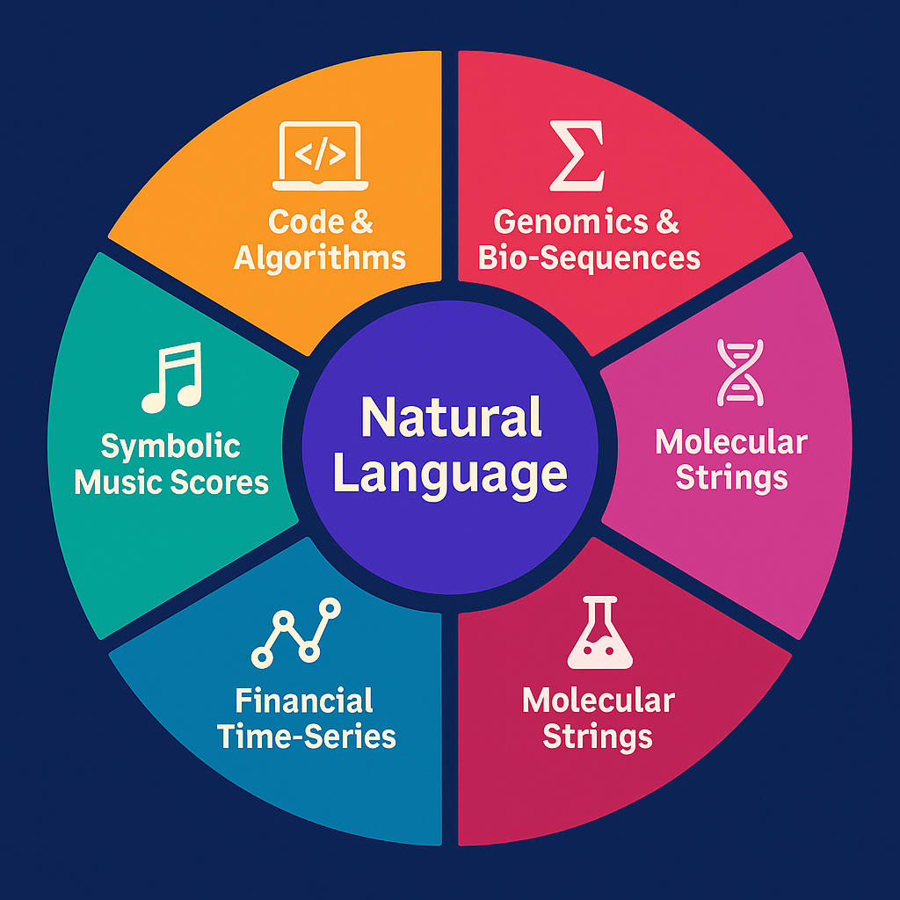
Bottom line:
Whether the task is protein folding, financial prediction, or symbolic music composition, the frontier is converging on “everything is a language model.”
Next-generation LLMs are no longer just text generators—they are becoming the universal substrate for intelligent computation.
⸻
1️⃣
Scale of Output
Humans: Entire industries of thousands of engineers working for years to build a 10–50M line codebase. Super LLM: Single agent (or a cluster of agents) producing 10–60M lines per task cycle — in hours or days. That’s not incremental — that’s compressing decades of coordinated effort into one prompt cycle.
2️⃣
Zero Coordination Overhead
Human teams burn vast time on meetings, documentation, context-switching, onboarding, QA, and dependencies. A Super LLM would never lose context, miscommunicate, or forget decisions. It could keep every spec, style guide, and requirement in memory.
3️⃣
Refactoring & Iteration
Humans: Refactoring millions of lines = years of risk and cost. Super LLM: Refactor 20M lines overnight and produce an audited changelog automatically.
4️⃣
Cross-Domain Engineering
Humans: Separate teams for frontend, backend, ML, cloud infra, testing, and integration. Super LLM: Handles all layers seamlessly — the code, tests, deployment, infra, APIs, and documentation.
5️⃣
Immediate Downstream Effects
The exact same system that writes 60M lines of code can:
Generate complete textbooks or novels. Solve open math problems while documenting proofs. Design genomes with in-silico validation. Architect entire planetary-scale projects like climate engineering.
6️⃣
The Key Leap
What you’re describing isn’t “just” an LLM with more parameters.
It’s a meta-system with:
Autonomy blocks (task decomposition + planning). Massive context windows (10–20M tokens per step). Meta-verification layers (self-check, self-refactor). Persistent memory (never loses its own progress).
This is literally the bottleneck remover for every complex human project.
⸻
Architectural Needs
Ultra-long context windows (10–20 M tokens) to hold entire genomes or multi-year patient records.
Hierarchical memory to separate stable genomic knowledge from fast-changing clinical updates.
Tight coupling to wet-lab automation (robotic labs, microfluidics) for direct experimentation.
Why this still isn’t “superintelligence”
All of these feats remain text-bound: the model manipulates symbols, code, and formal language.
It doesn’t have a rich world-model of continuous reality, embodiment, or independent goals.
But inside that 1-D symbolic domain it could:
operate 24/7 without fatigue, parallelize across thousands of instances, and accumulate and retrieve perfect memory.
What I described is the upper bound of next-gen LLMs—they stay within the single-modality world of text/symbols but can already beat large human teams at many knowledge-work tasks.
A superintelligence, by contrast, would:
Do all of that at far higher speed and breadth. If you imagine the LLM working 100× faster than a human, a true superintelligence might operate thousands or millions of times faster, and in parallel across countless copies. Cross every modality. It wouldn’t just reason in text. It would fuse real-time sensory data, video, 3-D simulations, robotics control, molecular models, and more into a single, unified world model. Originate new scientific paradigms. Where an advanced LLM might recombine known ideas, a superintelligence could uncover genuinely new physical laws or mathematical frameworks and immediately test them in simulation. Direct large-scale physical action. It could design, coordinate, and control fleets of robots, labs, or factories to implement discoveries—something a text-bound system simply can’t do.
So the relationship is:
Near-term autonomous LLMs = world-class symbolic reasoners and creators.
Superintelligence = that ability multiplied by orders of magnitude plus mastery of every other cognitive dimension (omnimodality, creativity, agency, long-term strategy, physical execution).
⸻
Roll-up: What DNI-Text Gains
These examples showcase task decomposition, symbolic verification, multi-step reasoning, and integration with coding/plotting tools—all things future autonomy-block LLMs could do with extremely high accuracy.
developed cpabilites
• A 10M-token planning window + autonomy blocks allows the LLM to handle long-horizon reasoning that current models can’t.
• Makes the model capable of agentic problem solving: decomposing tasks, executing them, verifying results, and iterating autonomously.
• Bridges the gap between human-level planning and machine-scale execution speed.
Impact
• Enables agentic reasoning in LLMs beyond single-prompt outputs.
• Supports complex workflows (coding, multi-step problem solving, simulations, interactive agents) that require temporal planning and action chaining.
• Effectively gives the model “autonomy” at the reasoning level, even if it still depends on external tools for execution.
Expected Performance Gains
Accuracy improvements aiming for 99+% correctness in well-represented domains 1 Dimensional data like text, code, math, and genomics. Autonomous, grounded, persistent, and composable LLMs that can handle complex, multi-modal, multi-session tasks.
⸻
• 10× context window
• superior attention block mechanisms
• memory blocks
• Tighter tool use
• MOE MHLA
⸻
⸻
DNI in text domains (code, math, language , genomics) becomes:
• Autonomous (fewer prompts, more persistent goals)
• Grounded (fewer hallucinations, tighter tool use)
• Persistent (long-term memory across tasks and users)
• Composable (handles documents, videos, APIs, and user behavior as one fluid task)
⸻
LLMs with Biological Capabilities (Integrated Multimodal DNI)
⸻
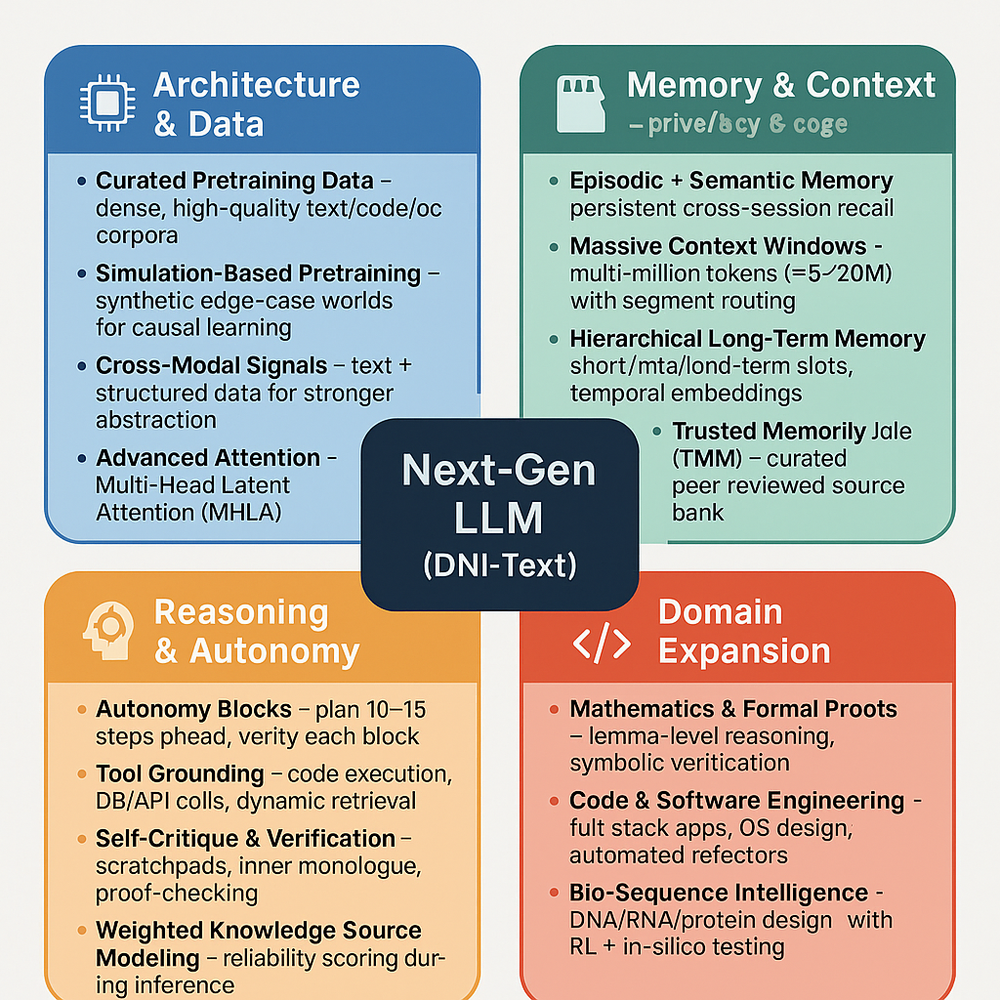
⸻
🟣 DNI-Text: Ultra-Capable 1-D Reasoner
Four color-coded sectors (examples of 1-D sequences):
The Two Pillars of Modern LLM Research
Caption:
Modern AI progress unfolds along two interconnected frontiers — cognition and efficiency. Cognitive architectures expand what a model can understand, reason about, or remember. Efficiency architectures make those cognitive leaps feasible by reducing compute, memory, and energy cost.
Description:
Large-scale language model research divides into two complementary domains.
The first, Cognitive or Capability-Expanding Innovations, introduces new forms of reasoning, memory, and abstraction — from meta-attention and JEPA-style predictive modeling to extended-context mechanisms like RoPE and RetNet. These define the ceiling of what intelligence can represent.
The second, Efficiency or Scaling-Enabling Innovations, focuses on compute pragmatics — technologies such as FlashAttention-2, Grouped-Query Attention, Mixture-of-Experts routing, and advanced parallelism that allow those cognitive designs to scale without prohibitive cost.
Together, these pillars create a self-reinforcing cycle: efficiency unlocks larger cognitive experiments, and new cognition drives the need for deeper efficiency. Every modern frontier model — from GPT-4 to Gemini-1.5 — exists at the intersection of these two forces.